1. Rodilla al pecho (isométrico) — 10×10 s por pierna
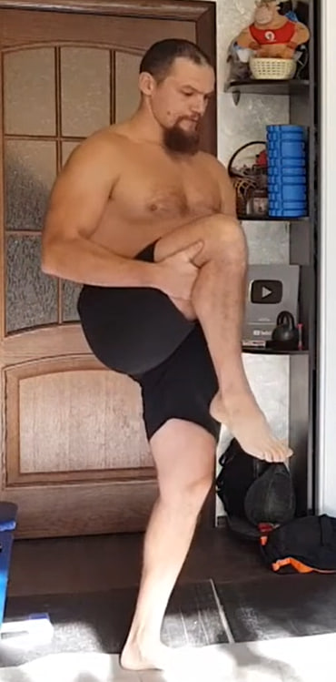De pie, espalda recta. Eleva una rodilla hacia el pecho y sujétala con ambas manos. Intenta elevar la rodilla un poco más mientras tus manos bloquean el movimiento (isometría).
Ejecución: 10 segundos × 10 por cada pierna.
2. Pierna recta al frente — 10×10 s por pierna
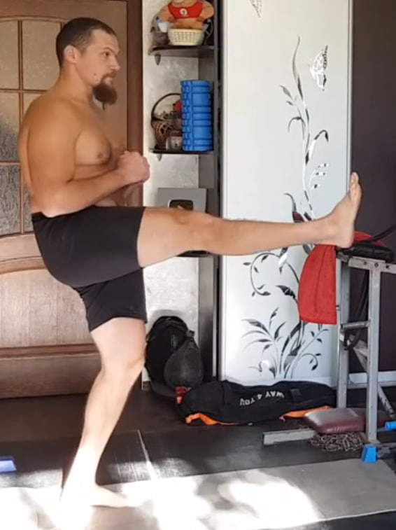De pie, torso recto. Eleva una pierna recta hacia adelante (ideal cerca de 90° o hasta donde puedas sin compensar). Mantén la pelvis estable y crea tensión intentando elevar un poco más sin que se mueva.
Ejecución: 10 segundos × 10 por cada pierna.
3. Zancadas — 10×10 s por pierna
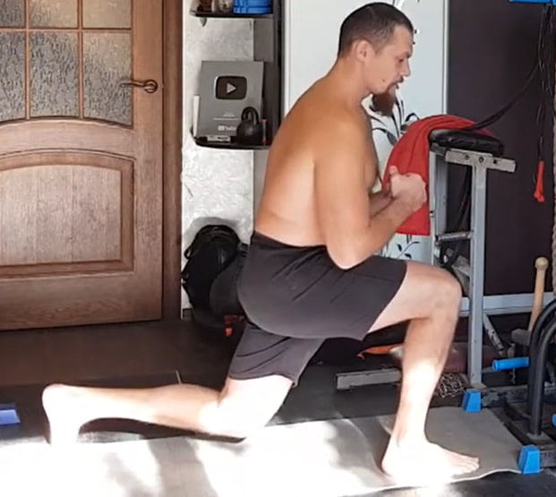Da un paso amplio y baja a una zancada profunda. Torso vertical, rodilla alineada con el pie. En la parte baja, congela la posición y mantén la tensión 10 segundos.
Ejecución: 10 segundos × 10 por cada pierna.
4. Pierna recta hacia atrás (glúteo) — 10×10 s por pierna
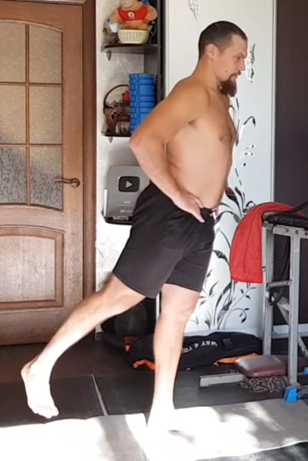De pie, manos en la cadera. Lleva una pierna recta hacia atrás sin inclinar el torso. La tensión principal debe sentirse en el glúteo, no en la zona lumbar.
Ejecución: 10 segundos × 10 por cada pierna.
5. Saltos estrella desde sentadilla — 2×10 (opcional 1×20)
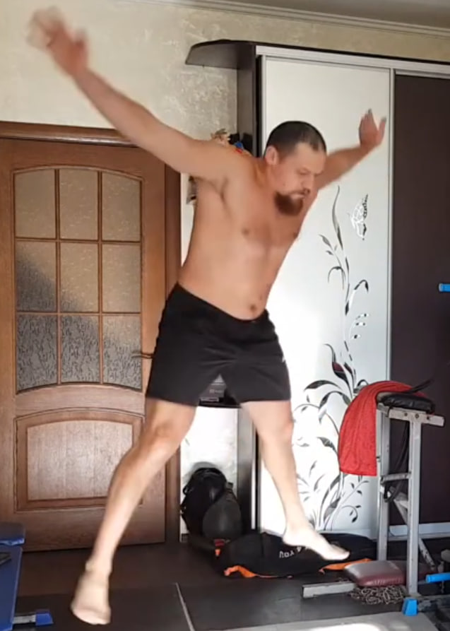Parte desde una sentadilla profunda. Salta explosivo abriendo brazos y piernas como una “estrella”. Aterriza suave y vuelve inmediatamente a la sentadilla.
Ejecución: 2 series de 10 repeticiones. Opcional: intenta 1 serie continua de 20.
6. Abdominales (piernas elevadas) — 3×10 (opcional 1×30)
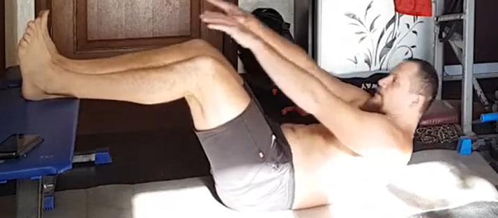Túmbate boca arriba. Eleva las piernas y flexiona rodillas (posición “mesa”). Haz un crunch corto: sube hombros y parte alta de la espalda, y baja con control manteniendo tensión.
Ejecución: 3×10. Opcional: 1×30 seguidas.
7. Bombeo rápido en apnea — 2×10

Inclínate un poco hacia delante y apoya las palmas en los muslos. Exhala completamente. Sin inhalar, crea vacío (abdomen metido) y haz bombeos rápidos (abdomen afuera/adentro) sin dejar entrar aire.
Ejecución: 2×10 bombeos.
8. Variante lenta (vacúo en apnea) — 10 repeticiones
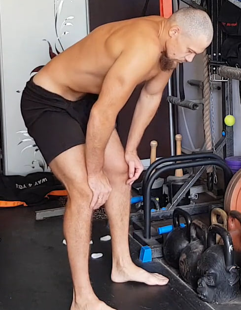
Misma posición. Exhala completamente, presiona manos contra muslos y mantén el vacío/retención de forma controlada. Suelta despacio y repite.
Ejecución: 10 repeticiones. (Se puede combinar con el ejercicio 7 en una sola serie.)
9. Isometría lateral para dorsal ancho — 10×10 s por lado

Manos detrás de la cabeza, codos abiertos. Inclina el torso hacia un lado desde la zona media del abdomen, sin girar caderas ni pecho. Mantén 10 segundos y alterna.
Ejecución: 10×10 s por cada lado.
10. “Coco” entre las escápulas — 10×10 s

Entrelaza los dedos detrás de la espalda (zona lumbar). Lleva los codos hacia atrás y ligeramente hacia fuera, pecho abierto y hombros abajo. “Aplasta” el coco juntando escápulas sin arquear de más la zona lumbar.
Ejecución: 10×10 s.
11. Dorsal ancho (parte externa) — 10×10 s por lado
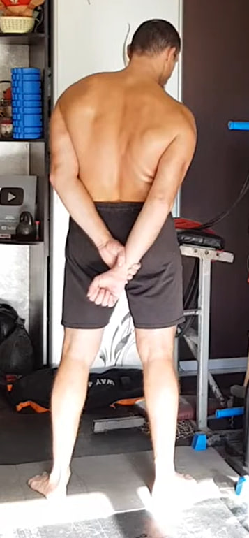Con una mano agarra la muñeca o el antebrazo del brazo contrario, que queda recto detrás de la espalda. Intenta jalar ese brazo hacia tu cuerpo mientras la espalda no permite el movimiento. Busca la tensión en la axila y el lateral de la espalda.
Ejecución: 10×10 s por lado.
12. Rotación interna del hombro con toalla — 10×10 s por lado
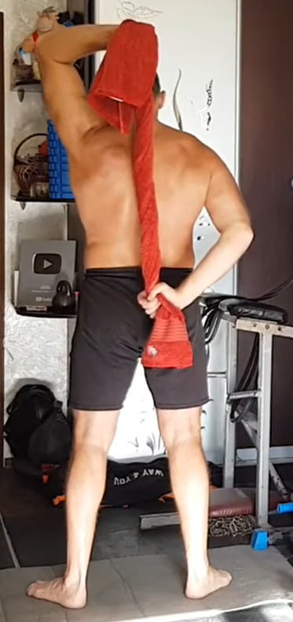Toalla detrás de la espalda: una mano arriba (detrás de la cabeza) y la otra abajo (cintura). Tira en direcciones opuestas creando tensión debajo del omóplato (no en el tríceps). Cambia de lado.
Ejecución: 10×10 s por cada lado.
13. Rotura en tres puntos con toalla — 3–6–3, 10 ciclos


Toalla/cinta que no se estire. Tres posiciones: delante, sobre la cabeza y detrás de la espalda. En cada punto: 3 s entrar en tensión, 6 s máximo esfuerzo, 3 s soltar.
Ejecución: 10 ciclos (cada ciclo = 3 puntos).
14. Agua: succionar y expulsar con fuerza — por volumen

Coloca dos recipientes (uno con agua y otro vacío). Succiona un bocado de agua y expúlsalo con fuerza al recipiente vacío (no dejes que se derrame solo). Se trabaja por volumen, no por repeticiones.
Ejecución: traslada el volumen indicado para el día (por ejemplo, una botella completa).
15. Rodar una pelota con la barbilla — 12 metros
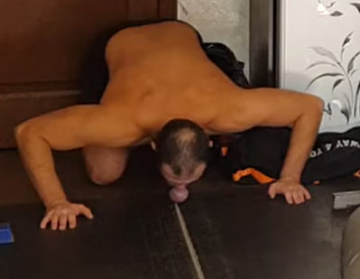A cuatro apoyos. Con una pelota pequeña (ideal: tenis) o un calcetín bien enrollado, usa la barbilla para hacerla rodar por el suelo. La meta es rodar, no empujar. Suma tramos hasta completar la distancia.
Objetivo: 12 metros.
16. Bombeo de antebrazo con calcetín — 10 por mano
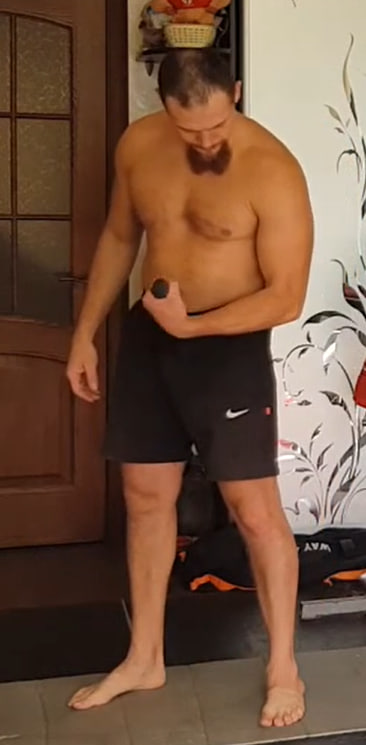Aprieta con fuerza un calcetín (o tela) dentro del puño y mueve la muñeca arriba y abajo sin soltar el agarre. Movimiento corto y continuo para “calentar” el antebrazo.
Ejecución: 10 repeticiones por cada mano.
Nota: puedes variar la posición del brazo (codo flexionado, brazo abajo, o durante una subida lenta) para sentir distintas zonas del antebrazo.
17. Bíceps (pose isométrica) — 10×10 s por brazo
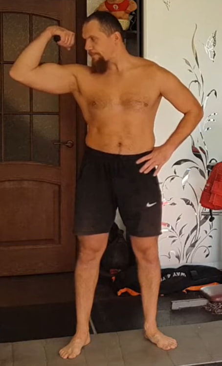Haz una pose de bíceps con contracción máxima. Mantén hombros abajo y torso estable. Busca tensión máxima sin mover el brazo.
Ejecución: 10×10 s por cada brazo.
18. Bíceps isométrico a 90° — 10 por brazo
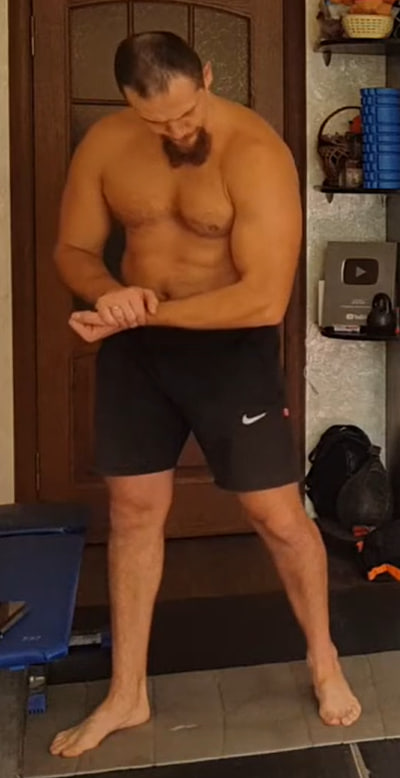Flexiona el brazo de trabajo cerca de 90° frente al cuerpo. Con la otra mano sujeta la muñeca o el puño y empuja hacia abajo creando resistencia. El brazo de trabajo intenta seguir flexionándose, pero la mano bloquea el movimiento. Mantén la tensión unos segundos.
Ejecución: 10 repeticiones por cada brazo.
19. Tríceps isométrico — 10 por brazo
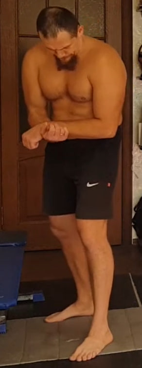Coloca el brazo de trabajo en un ángulo cómodo. Con la otra mano crea un punto fijo y aplica resistencia mientras el tríceps intenta extender el codo. Mantén tensión máxima unos segundos.
Ejecución: 10 repeticiones por cada brazo.
20. Fondos en banco (pausa arriba) — 10 repeticiones
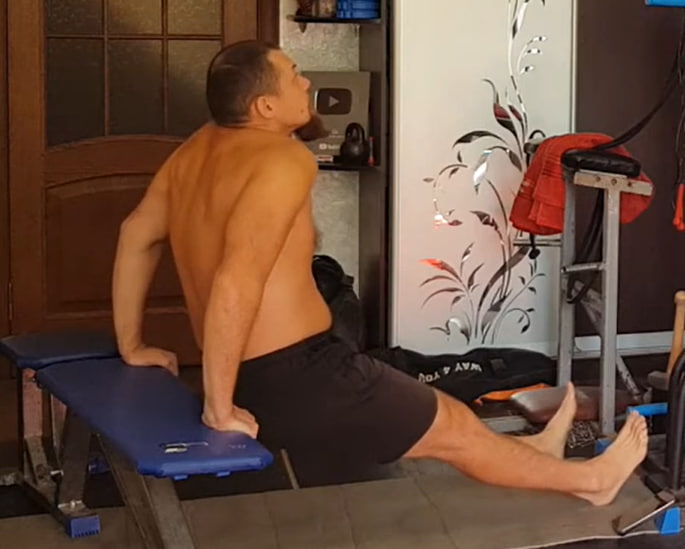Manos en el borde del banco/silla, piernas extendidas. Baja flexionando codos hacia atrás y sube sin bloquear por completo. Arriba, mantén la tensión con codos ligeramente doblados.
Ejecución: 10 repeticiones, con pausa de 10 segundos arriba en cada repetición.
21. Flexión al suelo con piernas rectas — 2×10
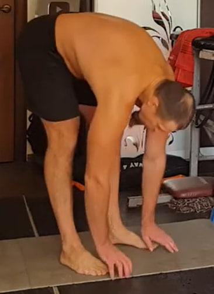De pie, piernas rectas. Inclina el torso hacia adelante llevando la cadera hacia atrás e intenta tocar el suelo con las manos sin doblar las rodillas. Vuelve a subir con control.
Ejecución: 2 series de 10 repeticiones.
22. Extensión tipo “cobra” — 2×10
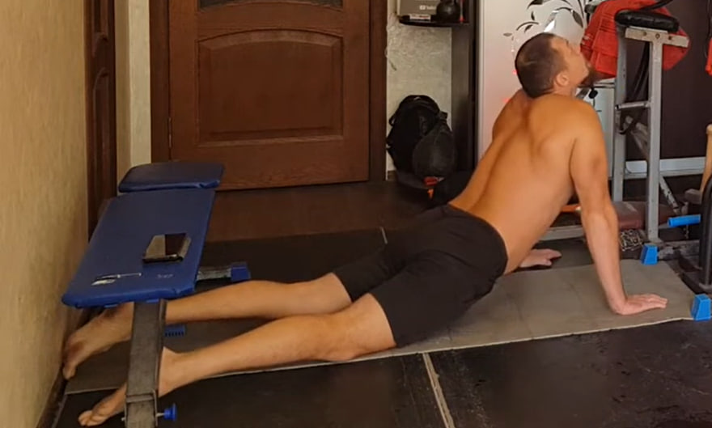Boca abajo, manos a los lados del pecho. Empuja el suelo para elevar el torso, abre el pecho y mira ligeramente hacia arriba sin forzar el cuello. Baja con control manteniendo abdomen activo.
Ejecución: 2 series de 10 repeticiones.
23. Estiramiento de pierna en apoyo elevado — 2×10 por pierna
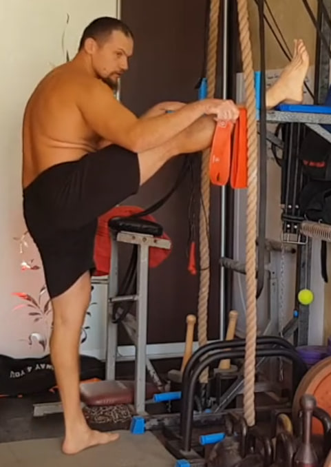Coloca una pierna extendida sobre una superficie elevada. Rodea la planta del pie con una toalla/cinta y tira suavemente hacia ti para llevar los dedos hacia arriba. Mantén espalda larga, sin dolor.
Ejecución: 2×10 por cada pierna.
24. Rodilla al pecho (estiramiento) — 2 bloques, 10×10 s por pierna
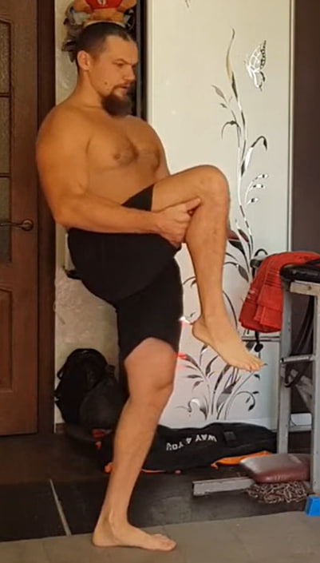 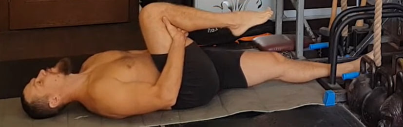Bloque 1 (de pie): eleva la rodilla al pecho y mantén 10 segundos.
Bloque 2 (tumbado boca arriba): una pierna extendida en el suelo y la otra rodilla al pecho. Mantén 10 segundos.
Ejecución: 10×10 s por pierna en cada bloque.
25. Peso muerto isométrico “bloqueado” — 10×10 s
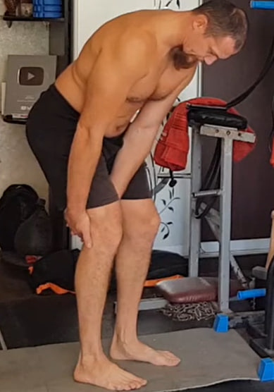Inclina el torso hacia adelante con la espalda firme. Usa las manos como “anclaje” por encima de las rodillas o en los muslos. Intenta levantar el torso como en un peso muerto real, pero las manos bloquean el movimiento.
Ejecución: 10×10 s.
26. Vises parciales con apoyo en los pies — 10×10 s
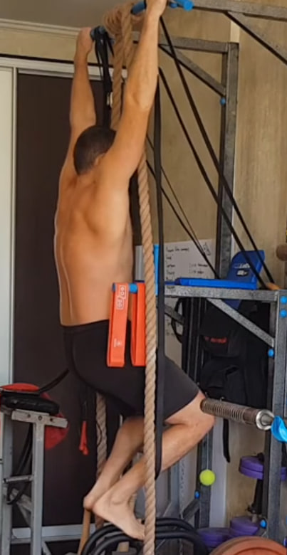Agarra una barra/soporte firme. No cuelgues todo tu peso: mantén los pies apoyados para dejar parte de la carga en el suelo. Relaja hombros y deja que el cuerpo se alargue suave, con control.
Ejecución: 10×10 s.